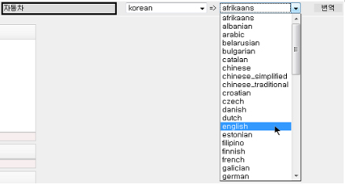
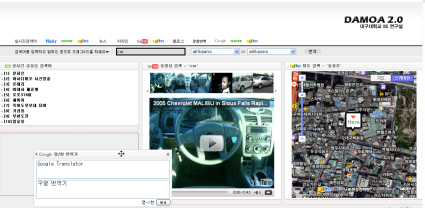
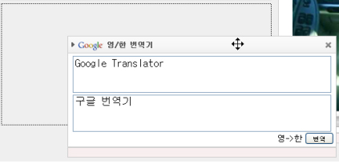
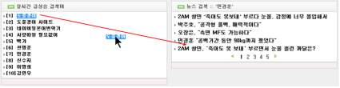
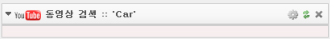
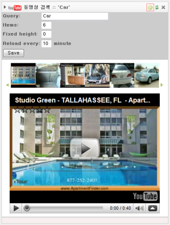
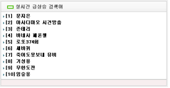

1. 국내외 주요 검색엔진 정보 통합 검색
- 종류별 : 이미지, 동영상, 지도, 부가기능(뉴스/지식인/블로그/문장번역)
- 국내(Naver/Daum), 국외(Flickr/YouTube/Google)
- 지도검색의 경우 검색창에 주소를 입력하시면 됩니다. (예 : 서울 영등포구 여의도동)
=> 명칭검색은 제한적으로 가능. (예 : 동성로)
2. 다국어 지원 시스템
- 사용자로부터 입력받은 질의어를 번역시스템을 이용해 전세계 54개국의 언어를 상호 번역

3. 최신 Ajax 기술을 이용한 동적 로딩
- 화면의 일부분만 동적으로 reload 하므로 속도가 빠르다.
- 화면 로딩 중 기다리는 시간 없이 다른 작업이 가능하다.
- 메뉴나 불필요한 정보를 재전송 받지 않아도 되므로
패킷당 통신요금제를 이용하는 User들에게는 엄청난 통신비 절감 효과가 있다.
- 기본적으로 자바스크립트를 이용하므로 별도의 ActiveX나 플러그인 설치 없이도
모든 웹브라우저에서 호환되어 동작한다.

4. 사용자 경험을 유념에 둔 드래그&드롭(Drag&Drop) 기능
- 컨텐츠 창(window)을 사용자의 입맛에 맞게 추가, 이동 및 삭제가 가능
- 텍스트(검색어, 검색 컨텐츠 창 내의 모든 텍스트) 역시 블록으로 지정하여
원하는 컨텐츠 창으로 이동이 가능하며, 해당 컨텐츠 창은 그 검색어로 자동 재검색을 수행
- 인터넷 익스플로러8 이상의 버전에서 드래그가 되지 않을 시, 도구->호환성 보기를 선택해 주시면 됩니다.


5. 개인화 서비스
- 사용한 컨텐츠 창의 정보를 쿠키(Cookie)에 저장해 놓아 브라우저를 다시 열었을 때
과거에 사용했던 컨텐츠들의 정보를 그대로 보여준다.
6. 기타
- 컨텐츠 창 접기

- 컨텐츠 창 Edit 기능 : 검색어, 검색 결과 수, 검색 결과 reload time, 창 길이 설정

- 처음 접속시, 실시간 검색어를 토대로 한 검색결과 보여주기

- 새로운 컨텐츠 창 생성시, 검색창에 입력한 검색어를 토대로 한 검색결과 보여주기
COPYRIGHT 2010 BY SEON-JIN, KIM ALL RIGHT RESERVED.